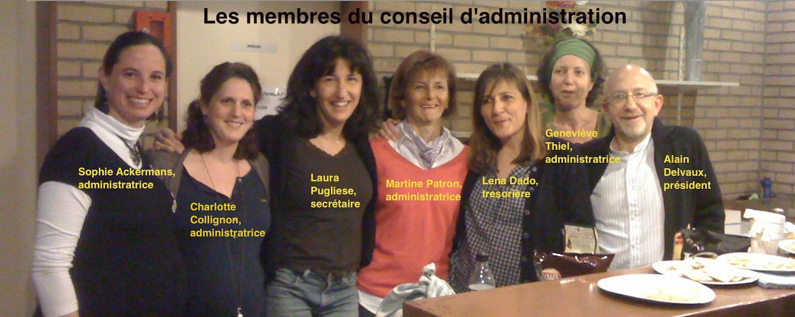
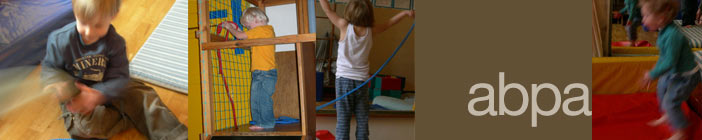

L'asbl ABPA (Association Belge de psychomotriciens formés à la Pratique Aucouturier) a été créée en 2002. Elle se propose comme un lieu de réflexion dont l’objet est de regrouper des professionnels formés à la Pratique Psychomotrice éducative et/ou thérapeutique à l'Ecole Belge de Pratique Psychomotrice Aucouturier (www.ebppa.be).
Nous voulons d’une part partager et échanger à partir d’une pratique commune et d’autre part élargir ce champ de réflexion à d’autres professionnels de l’enfance. L’asbl a également pour objet de développer des études et des recherches sur la Pratique Psychomotrice et sur ses applications dans les champs préventifs, éducatifs ou thérapeutiques. De plus, des actions de sensibilisation, de formation et de diffusion au travers de congrès, de séminaires et de débats sont menées.
Depuis 2002, nous avons organisé les conférences suivantes :
«Contes et psychomotricité» en novembre 2002,
«Les troubles de l’attachement: un travail d’équipe» en avril 2004,
«La Pratique Psychomotrice éducative, de la crèche à l’école primaire »
en octobre 2005.
Les actes de cette dernière sont editées et disponibles sur demande .
(voir "ACTIVITES ET AGENDA")
«Les enfants autistes: approche psychomotrice et sensorielle » en mai 2008
«Les angoisses archaïques » en octobre 2010.
Groupes de réflexion, intervisions, voyages d’études (Barcelone, Carpentras en projet,…).
En 2003, nous avons participé à la création de la Fédération belge des associations de l’éducation et de la thérapie psychomotrice. Au sein de cette fédération belge, nous sommes devenus membres du Forum européen de la psychomotricité. ( psychomot.org ).
Une formation à la relation à l'enfant par la voie du corps a été organisée pour les enseignants du réseau libre au sein du SEGEC. D'autres formations sont en préparation.
